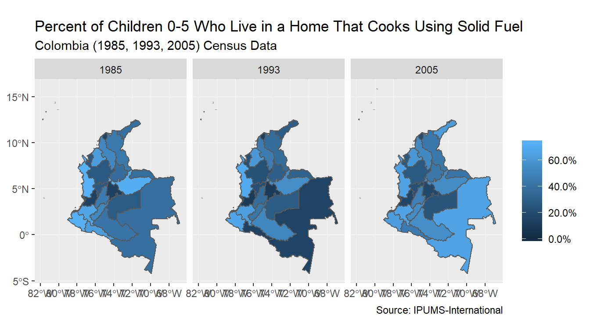
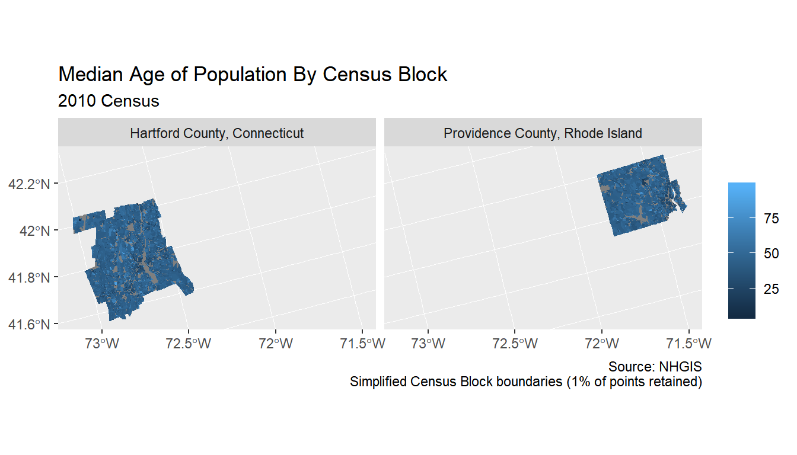

Geographic Data in ipumsr
Minnesota Population Center
2019-02-26
Source:vignettes/ipums-geography.Rmd
ipums-geography.RmdA lesser-known part of the IPUMS data catalog is our geographic boundary files. For many projects, our geographers have created shape files to complement the micro- and tabular data we provide. These boundaries are stored in shape files, which can be downloaded from our website (in slightly different places depending on the project):
- Microdata projects like IPUMS DHS, IPUMS International and IPUMS USA provide shape files on dedicated geography pages that are separate from the microdata extract system.
- IPUMS NHGIS provides access to the shape files relevant to your current extract as part of the system to create the data extract. The shape files are a separate download, but are on the same page as the data.
- IPUMS Terra provides shape files inside the extract bundle and allows for aggregating microdata and raster data into the boundaries.
(Note: The ipumsr package does not yet support IPUMS Terra data. We hope to add support for IPUMS Terra soon.)
This vignette offers an introduction to the types of geographies available through IPUMS, then uses example data to walk through two typical workflows for using boundary data with (1) IPUMS DHS, IPUMS International or IPUMS USA, and (2) IPUMS NHGIS. The vignette focuses on the specifics of working with IPUMS geographic data, and is by no means an overview of working with geographic data in R. In the examples, I show how to make static graphs using ggplot2, but there are many other R packages to help you do all sorts of things with geographic data, including making interactive maps and performing geospatial analysis. At the end of this vignette, there are some resources for learning more.
Introduction to IPUMS Geographies
IPUMS geographic data can be classified along two dimensions:
Harmonized vs. Non-Harmonized
Changing boundaries complicate longitudinal analyses of geographic units. For many geographies IPUMS provides boundary files that have been made consistent by combining geographies that share area for different time periods (see the project specific geography webpages for more details). IPUMS geography pages refer to these as “harmonized”, “integrated” or “consistent”. Boundaries that have not been made consistent over time are often referred to as “year-specific,” or may simply be labelled with the year to which they pertain (eg “2010 PUMAs” for IPUMS USA).
A Note on R’s Geospatial Packages: sf vs sp
The ipumsr package allows for loading geospatial data in two formats (sf for Simple Features and sp for Spatial). The sf package is relatively new, and so does not have as widespread support as the sp package. However, (in my opinion) it does allow for easier analysis, and so may be a better place to start if you have not used GIS data in R before.
All examples in this vignette will use the sf package, but sp’s functionality is generally similar. The only place where the code is noticeably different is for making plots. See the resources at the end of this vignette for some instructions on plotting with the sp package.
Basic workflow for IPUMS DHS, IPUMS International, and IPUMS USA
Every analysis will be slightly different, but in general the workflow for integrating geographic data and microdata from IPUMS DHS, IPUMS International or IPUMS USA can be divided into four steps before we’re ready to analyze the data:
- Download microdata and shape files
- Load microdata and shape files into R
- Transform data
- Merge microdata and boundary data
In this vignette, I will first walk through these steps for an example that maps geographic variation in the use of solid fuel for cooking in households with children aged 0-5 in Colombia. Later on in the vignette, I show a more complicated example that combines the data for Colombia, Ecuador and Peru.
The data for this example is included in the package ipumsexamples, which is available on github. If you want to run the code from this vignette you will need to install it by running the following commands:
if (!require(devtools)) install.packages(devtools)
devtools::install_github("mnpopcenter/ipumsr/ipumsexamples")# This function helps find the data from the ipumsexamples package for us
ex_file <- function(x) {
system.file("extdata", x, package = "ipumsexamples")
}Before you work on the data for yourself, I recommend reading the specifics about the project’s geographic data on the IPUMS website (IPUMS DHS IPUMS International and IPUMS USA). Each project has its own idiosyncrasies that you’ll want to understand before diving in.
1) Download microdata and shape files
From the data extract engine I see that the variable FUELCOOK is available in three censuses from Colombia (1985, 1993 and 2005).
The decision to use harmonized or year-specific geographic variables depends on how you want to analyze change over time. If I want to be able to compare how the data has changed over time for particular geographies, I need to use the harmonized version of the Colombian geography so that the geographic units are the same. In this case, I will use the harmonized version, but other analyses could use the non-harmonized versions (like if I cared about showing the most up-to-date boundaries more than being able to compare across years). Similarly, the level of the geographic variables you choose depends on your research question. For this example I will use level 1 geography.
Once I know which geographic variables I want, I need to add those geographic variables to my microdata extract and download the corresponding shape files from the project specific geography page.
In the IPUMS International microdata extract system, I added the variable GEOLEV1 (which contains harmonized first-level geography) for Colombia. To download shape files on the IPUMS International geography page, I can click on the “GIS Boundary Files Download” link. For Colombia, I’ll want to look on the “Spatially harmonized first-level geography” page.
2) Load microdata and shape files into R
The read_ipums_micro() function loads the data and the read_ipums_sf() (or read_ipums_sp()) function loads the shape files.
suppressPackageStartupMessages({
library(ipumsr)
library(sf)
library(dplyr)
library(ggplot2)
})
#> Warning: package 'dplyr' was built under R version 3.5.2
# Load data
ipumsi_ddi_file <- ex_file("ipumsi_00011.xml")
ipumsi_ddi <- read_ipums_ddi(ipumsi_ddi_file)
ipumsi_data <- read_ipums_micro(ipumsi_ddi_file, verbose = FALSE)
# Note this data contains data from Ecuador and Peru for use later on
# in the vignette. For now we will just filter it out of our data
ipumsi_data <- ipumsi_data %>%
filter(COUNTRY == 170) # Labelled value 170 is Colombia
# Load shape file
colombia_shape <- read_ipums_sf(ex_file("geo1_co1964_2005.zip"), verbose = FALSE)3) Transform data
Our first data transformation is a step that most analyses will need regardless of whether they use geographic data or not.Though IPUMS microdata has been cleaned and formatted to be easy to use, generally there is at least some data processing we need to do (as discussed in the value-labels vignette).
In this example, I want to make the solid fuel use variable binary and also use the value labels for COUNTRY, SAMPLE and AGE2, but zap them for the geography variables.
When combining with shape files, the shape files also generally have the labels for the geographic units, so we do not need to keep the labels on the geographic variables in the microdata. Also, because the name of a geography may not be unique (eg there are 8 states in the US with a Fulton County), it’s better to merge on the unique numeric code.
# Convert labelled values to factors where useful (and zap elsewhere)
# See the value-labels vignette for more on this process.
fuel_labels <- ipums_val_labels(ipumsi_data$FUELCOOK)
fuel_missing_lbls <- c(
"NIU (not in universe)", "Multiple fuels", "Other combinations", "Other", "Unknown/missing"
)
fuel_solid_vals <- c(50:56, 61, 73, 74, 75)
ipumsi_data <- ipumsi_data %>%
mutate_at(vars(COUNTRY, SAMPLE, AGE2), ~as_factor(lbl_clean(.))) %>%
# We will get labels from shape file for geographic variables
mutate_at(vars(starts_with("GEO")), zap_labels) %>%
mutate(
SOLIDFUEL = FUELCOOK %>%
lbl_na_if(~.lbl %in% fuel_missing_lbls) %>%
lbl_relabel(
lbl(0, "Non-solid Fuel") ~ !.val %in% fuel_solid_vals,
lbl(1, "Solid Fuel") ~ .val %in% fuel_solid_vals
) %>%
as_factor(),
FUELCOOK = as_factor(FUELCOOK)
)The next data transformation will be to summarize the microdata to the geographic unit. Microdata has one observation per person, but usually when we are making a map, we want a summary measure for a geographic unit. In this case, because we have data at three time points for Colombia, we summarize by geographic unit and year.
4) Merge microdata and boundary data
The function ipums_shape_inner_join() allows us to combine the data and shape file while smoothing out some of the complications because the data and shape files are provided in slightly different formats (eg, the geography ID variable is numeric in the microdata, but stored as character in the shape file). It also gives a message when some of the data has been dropped by the join.
Before we are able to join the data, we need to determine what the geographic ID is called in each file. Unfortunately, for microdata projects, the name of the variable is often different between the two. The project’s website often has information explaining how they are named, but they may not always describe the exact abbreviations. In this example, in the data it is called “GEOLEV1” and in the shape file it is “GEOLEVEL1”.
names(ipumsi_summary)
#> [1] "YEAR" "COUNTRY" "GEOLEV1" "pct_solid"
names(colombia_shape)
#> [1] "CNTRY_NAME" "ADMIN_NAME" "CNTRY_CODE" "GEOLEVEL1" "PARENT"
#> [6] "geometry"
ipumsi <- ipums_shape_inner_join(
ipumsi_summary,
colombia_shape,
by = c("GEOLEV1" = "GEOLEVEL1")
)Notice that the join warned us about one observation dropping out of the shape file. Because we chose an inner join, all observations that were not in both the microdata and the shape data are dropped from the results. Join failures like this can happen for a variety of reasons.
We can investigate this join failure using the join_failures command.
In this case, it appears that the shape file includes Lake Titicaca for mapping purposes, even though no one lives in the lake. We will just leave this boundary out of our dataset.
In general, these kinds of join failures can sometimes indicate that something is wrong with your data. Perhaps: - The wrong shape file was used - The data was not completely loaded - The wrong ID variable was used in the by parameter
But others may not be relevant to your analysis: - There is no population inside of a geography and so it exists in the shape file but not the data (as happened in this case) - A geography was listed in the census, but it’s boundaries are so small that they were not put in the shape file (can happen when shape files are simplified so that they don’t take as much computer resources) - A geography doesn’t actually refer to a place with real boundaries. This happens in some US censuses which have census blocks that refer to “Crews of Vessels” for crews of naval ships. Since ships don’t have a fixed location, they are not included in the boundary file.
Ready to analyze data!
Now the data is ready for us to use. Here’s a quick example of how to make a map with ggplot2.
# Note the function `geom_sf()` is currently only in the development version,
# so you may need to update ggplot2 to run using
# devtools::install_github("tidyverse/ggplot2")
if ("geom_sf" %in% getNamespaceExports("ggplot2")) {
ggplot(data = ipumsi, aes(fill = pct_solid)) +
geom_sf() +
facet_wrap(~YEAR) +
scale_fill_continuous("", labels = scales::percent) +
labs(
title = "Percent of Children 0-5 Who Live in a Home That Cooks Using Solid Fuel",
subtitle = "Colombia (1985, 1993, 2005) Census Data",
caption = paste0("Source: ", ipums_file_info(ipumsi_ddi, "ipums_project"))
)
}
Basic workflow for IPUMS NHGIS
The geographic data is more tightly integrated with the census data for the IPUMS NHGIS project, but otherwise the process for using IPUMS NHGIS data is similar to using the microdata projects.
Again, the specifics of each analysis will be slightly different, but here is an example showing the median age by census block in Connecticut and Rhode Island.
1) Download data and shape files
The IPUMS NHGIS extract engine has better integration of the shape files and data. The website allows you to filter on variables that are only available at a particular geographic level when looking for variables and to select particular levels after selecting a table. Also, the geographic boundary files can be selected alongside the tables using the “GIS Boundary Files” tab. The extract engine also provides a single place to download both the data and the boundary files.
In our example, we select table P13, “Median Age by Sex” at the census block level. Because census block data is so large, the extract engine divides each state’s boundaries into different files, so we also need to select that we want Connecticut and Rhode Island.
2) Load data and shape files into R
For most uses you will be able to load the data and shape files at the same time using the read_nhgis_sf() (or read_nhgis_sp()) function. Even when the geographic data is divided by the extract engine because of size reasons (like how each census block file is for a single state), these functions will combine the shape files for us. However, if your analysis combines across years or geographic levels, you will need to load the data separately and then combine.
So in our example, we run the following to load the data:
nhgis_ddi <- read_ipums_codebook(ex_file("nhgis0024_csv.zip"))
nhgis <- read_nhgis_sf(
data_file = ex_file("nhgis0024_csv.zip"),
shape_file = ex_file("nhgis0024_shape_small.zip"),
verbose = FALSE
)In other situations, such as combining data from different tables or geographic level, you may need to load the data and shape files separately. In this case, you can use the function read_nhgis() to load the data and read_ipums_sf() (or sp) to load the shape files. In these analyses, the process for combining the data is similar to the process described below for the more complicated IPUMS International workflow where multiple shape files are combined.
Ready to analyze data!
Now we’re ready to use the data. Here is a map of the median age for Hartford County, CT and Providence County, RI.
# The median age is 0 for unpopulated counties, set them to NA
nhgis <- nhgis %>%
mutate(H77001 = ifelse(H77001 == 0, NA, H77001))
# For map filter to Hartford County, CT and Providence County, RI
nhgis_subset <- nhgis %>%
filter(COUNTY %in% c("Hartford County", "Providence County")) %>%
mutate(place_name = paste0(COUNTY, ", ", STATE))
if ("geom_sf" %in% getNamespaceExports("ggplot2")) {
ggplot(data = nhgis_subset, aes(fill = H77001)) +
geom_sf(linetype = "blank") +
scale_fill_continuous("") +
facet_wrap(~place_name) +
labs(
title = "Median Age of Population By Census Block",
subtitle = "2010 Census",
caption = paste0(
"Source: ", ipums_file_info(nhgis_ddi, "ipums_project"), "\n",
"Simplified Census Block boundaries (1% of points retained)"
)
)
}
Combining multiple shape files
When combining multiple shape files, the process is generally similar, but it does require some more steps in the “Transform Data” step. To demonstrate, I will continue the IPUMS International example from above, but add the data from Ecuador and Peru.
In this example, I have added the Ecuador 2010 and Peru 2007 censuses, to the IPUMS international example above. These samples also have data for the FUELCOOK variable. Rather than use the harmonized geography, for these countries I chose to use the non-harmonized data for these 2 countries. Because the FUELCOOK variable is only available in one census for these countries, the benefits of the harmonized version are less important (but once again, this decision depends on the analysis).
I made sure to include the year-specific variables GEO1_EC2010 and GEO1_PE2007 for Ecuador and Peru in the microdata extract, and got the geographic boundary files from the “Year-specific first-level geography” page.
Now I’m ready to load the data into R as before. The only changes are that I no longer filter out the non-Colombian data and load the extra shape files. Then I transform the value labels just as I did when working with Colombia.
# Load data
ipumsi_ddi_file <- ex_file("ipumsi_00011.xml")
ipumsi_ddi <- read_ipums_ddi(ipumsi_ddi_file)
ipumsi_data <- read_ipums_micro(ipumsi_ddi_file, verbose = FALSE)
# Load shape files
colombia_shape <- read_ipums_sf(ex_file("geo1_co1964_2005.zip"), verbose = FALSE)
ecuador_shape <- read_ipums_sf(ex_file("geo1_ec2010.zip"), verbose = FALSE)
peru_shape <- read_ipums_sf(ex_file("geo1_pe2007.zip"), verbose = FALSE)
# Convert labelled values to factors where useful (and zap elsewhere)
# See the value-labels vignette for more on this process.
fuel_labels <- ipums_val_labels(ipumsi_data$FUELCOOK)
fuel_missing_lbls <- c(
"NIU (not in universe)", "Multiple fuels", "Other combinations", "Other", "Unknown/missing"
)
fuel_solid_vals <- c(50:56, 61, 73, 74, 75)
ipumsi_data <- ipumsi_data %>%
mutate_at(vars(COUNTRY, SAMPLE, AGE2), ~as_factor(lbl_clean(.))) %>%
# We will get labels from shape file for geographic variables
mutate_at(vars(starts_with("GEO")), zap_labels) %>%
mutate(
SOLIDFUEL = FUELCOOK %>%
lbl_na_if(~.lbl %in% fuel_missing_lbls) %>%
lbl_relabel(
lbl(0, "Non-solid Fuel") ~ !.val %in% fuel_solid_vals,
lbl(1, "Solid Fuel") ~ .val %in% fuel_solid_vals
) %>%
as_factor(),
FUELCOOK = as_factor(FUELCOOK)
)Now that we are combining geographies we need to combine the geographic ID variables in the data (GEOLEV1 for Colombia, GEO1_EC2010 for Ecuador and GEO_PE2007 for Peru) into a single variable.
ipumsi_data <- ipumsi_data %>%
mutate(GEOLEV1 = case_when(
COUNTRY == "Colombia" ~ as.integer(GEOLEV1),
COUNTRY == "Ecuador" ~ GEO1_EC2010,
COUNTRY == "Peru" ~ GEO1_PE2007
))Then we can summarize to the geographic units and year as before:
ipumsi_summary <- ipumsi_data %>%
group_by(YEAR, COUNTRY, GEOLEV1) %>%
summarize(pct_solid = mean(SOLIDFUEL == "Solid Fuel", na.rm = TRUE))Another new step when combining multiple geographies is to bind the shape files together. The command rbind() has been implemented for sf (and sp) spatial objects, but before we do that, we want to give each country’s shape data the same structure. When combining non-harmonized geographies or across different geographic levels, the variable names will not be the same. There is some guidance on the IPUMS website about how the variables are named, but some of it will require looking at your shape files.
# Currently each shape file has different variable names
names(colombia_shape)
#> [1] "CNTRY_NAME" "ADMIN_NAME" "CNTRY_CODE" "GEOLEVEL1" "PARENT"
#> [6] "geometry"
names(ecuador_shape)
#> [1] "CNTRY_NAME" "ADMIN_NAME" "CNTRY_CODE" "IPUM2010" "PROV2010"
#> [6] "PARENT" "geometry"
names(peru_shape)
#> [1] "CNTRY_NAME" "ADMIN_NAME" "CNTRY_CODE" "IPUM2007" "DEPT2007"
#> [6] "PARENT" "geometry"
# Keep CNTRY_NAME (because the year-specific geography codes are not unique across
# countries, so we need to merge using it), ADMIN_NAME (to get the name of
# geography), rename GEOLEVEL1, IPUM2010 and IPUM2007 to the same variable
# name, and keep geography, which contains the shape)
colombia_shape <- colombia_shape %>%
select(CNTRY_NAME, ADMIN_NAME, GEOJOIN = GEOLEVEL1)
ecuador_shape <- ecuador_shape %>%
select(CNTRY_NAME, ADMIN_NAME, GEOJOIN = IPUM2010)
peru_shape <- peru_shape %>%
select(CNTRY_NAME, ADMIN_NAME, GEOJOIN = IPUM2007)
# Now we can rbind them together
all_shapes <- rbind(colombia_shape, ecuador_shape, peru_shape)Then we can join the data in a similar process as before. Since we named the geography ID variables in the shape file GEOJOIN, we use that in the by parameter. Also, because the non-harmonized geography IDs are not unique across countries, we use the country’s name to join as well.
ipumsi <- ipums_shape_inner_join(
ipumsi_summary,
colombia_shape,
by = c("COUNTRY" = "CNTRY_NAME", "GEOLEV1" = "GEOJOIN")
)
#> Some observations were lost in the join (49 observations in the data). See
#> `join_failures(...)` for more details.Now we can make the map with all 3 countries:
# Convert the year to a round variable to display in facets
ipumsi <- ipumsi %>%
mutate(census_round = cut(YEAR, c(1984, 1992, 2004, 2014), c("1985", "1993", "2005-2010")))
# Note the function `geom_sf()` is currently only in the development version,
# so you may need to update ggplot2 to run using
# devtools::install_github("tidyverse/ggplot2")
if ("geom_sf" %in% getNamespaceExports("ggplot2")) {
ggplot(data = ipumsi, aes(fill = pct_solid)) +
geom_sf() +
facet_wrap(~census_round) +
scale_fill_continuous("", labels = scales::percent) +
labs(
title = "Percent of Children 0-5 Who Live in a Home That Cooks Using Solid Fuel",
subtitle = "Colombia (1985, 1993, 2005) Census Data",
caption = paste0("Source: ", ipums_file_info(ipumsi_ddi, "ipums_project"))
)
}
Resources for Geographic Analysis in R
There are so many great resources on working with geographic data in R, it’s hard to pick just a few. Here are a few places to start:
- The CRAN Task View for Spatial Analysis describes many of the packages available for spatial analysis in R.
- For general information about the sf and sp packages, I recommend reading the vignettes for those packages(
vignette(package = "sf")andvignette(package = "sp")). - The leaflet package is great for interactive web-technology based maps.
- The CRAN website has a great tutorial called “Introduction to visualizing spatial Data in R” that focuses on visualizing data from the sp package.
- The R consortium proposal for the sf package provides of the history behind the sf package.